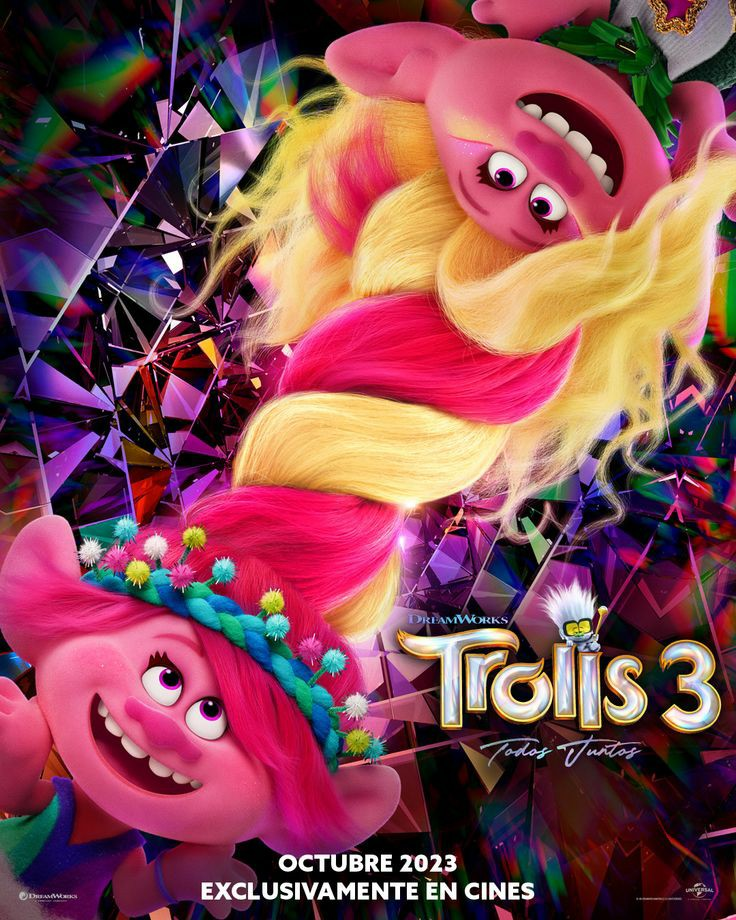
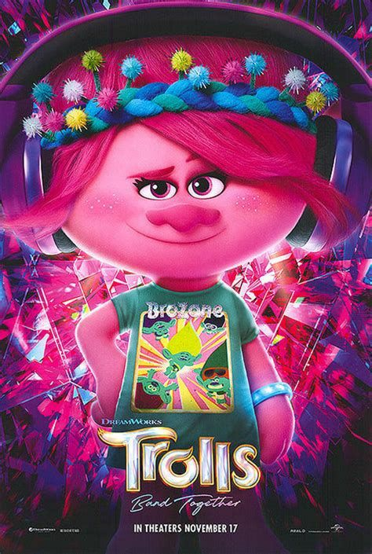
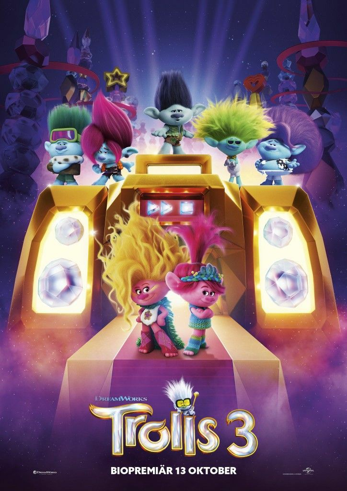

Quando um de seus irmãos, Floyd, é sequestrado por dois vilões o pop-star, Tronco e Poppy embarcam em uma jornada angustiante e emocional para reunir os outros irmãos e resgatar Floyd.
A aventura onde diversão, desafios e muitos novos e loucos amigos. A dupla de cantores ruins sequestram o irmão do Tronco e sugam seu talento.
O objetivo de Tronco e Poppy é encontrar todos os quatro irmão do Tronco e crir a harmoni pereita em familia para salvarem seu irmão.
O filme passa vários assuntos da atualidade, como a união em familia e aquelas pessoas que querem ser famosos sem fazer esforço. E mostra também como também mostra onde os irmãos do Tronco estavam todo esse tempo.
Tem muita músicas contagiantes e muita emoção para quem gosta desse tipo de animação.
